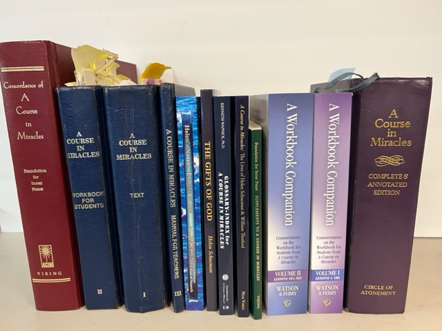

2026 Annual Picnic — October 11, 2026
Time: 1:00 PM – 4:00 PM
Location: Creve Coeur Lake Memorial Park
Shelter: Taco Bell Shelter (Shelter D), lakefront
Food: Grilled hot dogs, chicken kabobs, drinks & BBQ provided
Bring: A side dish or dessert to share
Questions: Nancy Light · 314-323-5979
Bring your bike(s) and walking shoes — Creve Coeur Lake is beautiful in October!
Save the Date
"Living Miraculously in Changing Times"
May 21–23, 2027 · Mercy Conference and Retreat Center · St. Louis
Learn MoreThe Council serves more than 300 ACIM students in the greater St. Louis area by providing resources, connection, and community.
We maintain a current listing of every ACIM study group in the St. Louis region — in-person, Zoom, and telephone — so no student has to study alone.
Each year the Council brings a recognized ACIM teacher to St. Louis for a weekend retreat at the Mercy Conference and Retreat Center. Our 2027 speaker is Tama Kieves.
The Council hosts an annual community picnic, local speaker gatherings, and coordinates community-wide events for ACIM students throughout the region.
A Course in Miracles is a self-study spiritual thought system that teaches forgiveness as the path to inner peace. It has guided millions of students worldwide toward a life rooted in love rather than fear.
Watch "A Course in Miracles in Sixty Minutes" with Robert and Emily Perry to get a clear and welcoming introduction. A free Starter Kit — including the video transcript — is available from the Circle of Atonement.
Watch the Introduction Free Starter Kit
The Council is seeking input to guide us in creating opportunities for ACIM followers in the St. Louis region. We'd appreciate a few minutes of your time.
Take the SurveySubscribe to our newsletter for updates on meetings, events, retreats, and inspiration from the St. Louis ACIM community.
Subscribe Find us on Facebook